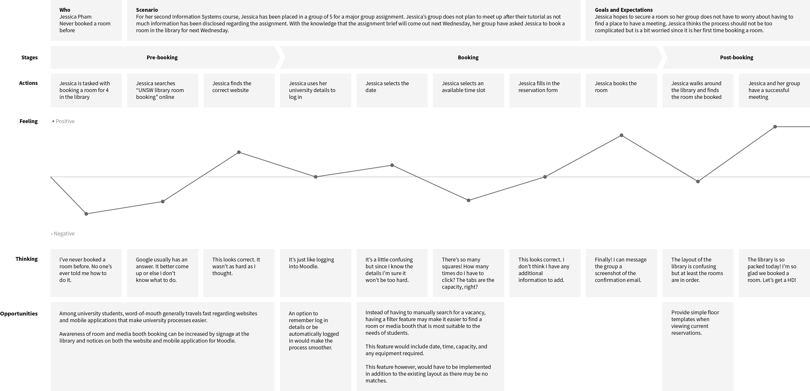
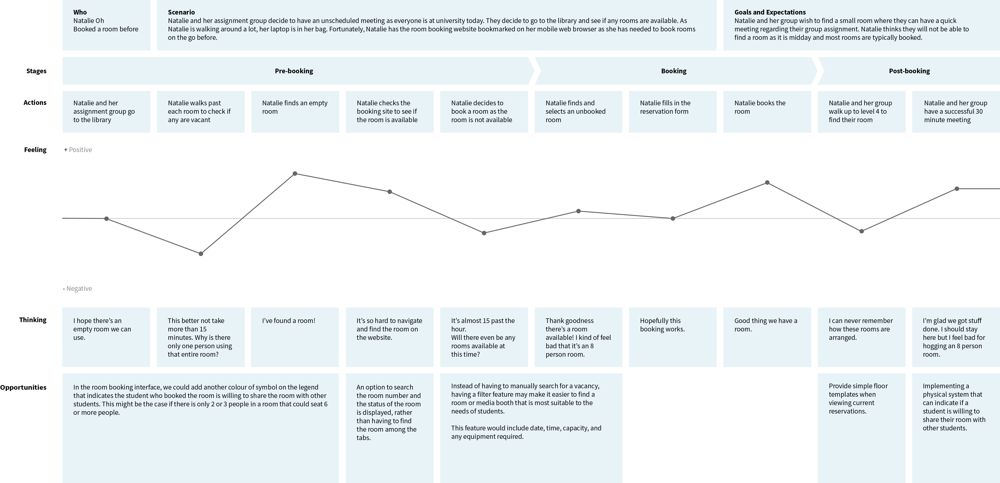
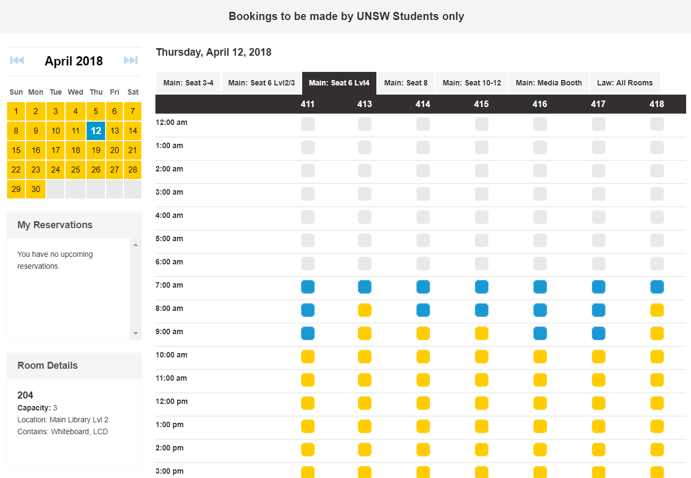

Problem
During breaks, many students visit the library for an undisrupted place to study, hold groups meetings or interviews. As a result, some students book rooms or media booths days in advance. The booking system, however, causes an underutilisation of rooms and media booths, and does not accommodate students with unscheduled breaks or meetings. Thus, these students find themselves walking around each level looking for an appropriate space, which can be quite time consuming.
Challenge
How might we create a simple and efficient mobile booking system for students that will improve the utilisation of time and study spaces?
Solution
UNSW Rooms is a mobile application that allows students to quickly search, filter and view rooms and media booths that better align with their needs. Students are also able to share larger capacity rooms with other students, to improve utilisation.
Research + Analysis
Student Insights
Before conducting any interviews, I decided to take a step back and observe how students in general go about their day at university. They were students constantly walking - getting to lectures, tutorials, the library, the food court - everywhere. They were students who sat in the library for more than 1 hour and students who were walking around the library, taking a peek through every room door. Very rarely do you see students who are walking around stop in their paths, take out their laptops, and book a room. But what I noticed is that a lot of students tend to carry their phones in their hands when they walk around.
Bearing these observations in mind, I conducted informal user interviews to develop insights into the room booking experience. I asked questions regarding their visits to the library, the room booking experience (if they had any) and observed how they would make a booking. After interviewing multiple students from different stages and faculties, I collated the information to derive the following insights:
- Students whose lectures and tutorials that are typically at lower campus feel less inclined to study or hold meetings in the library (upper campus) – these students either did not know of the booking system or have rarely used it
- Students have found that rooms that could seat 4 or more people are rarely ever at full capacity
- Some students have spent more than 20 minutes trying to find a vacant room on multiple occasions
- Many students hope to find a vacant room without having to book one
- Students were willing to share greater capacity rooms with other students as long as they are not disruptive
- Some students had entered an empty room, placed everything they needed on the desks, only for the people who actually booked the room to come - a lot of awkward stories
Based on the student insights, two user journey maps were made to represent the student's actions, feelings, and opportunities for improvement when using the website to book a room. The journey maps were based on two personas:
- Jessica Pham - a first year Information Systems student who has never booked a room before. She has been to the library a few times but assumed that students could just walk into rooms and use them. Jessica is shy around strangers and wishes to figure things out herself before having to ask someone else for help.
- Natalie Oh - a third year Civil Engineering student who has booked multiple rooms before. Her experiences range from booking rooms in advance to finding an empty room and hoping for 15 minutes to pass by (bookings are forfeited after 15 minutes past the hour). Natalie has had some unreliable group members in the past so she starts her group assignments early in case she has to do extra work.

User Journey Map - Jessica Pham

User Journey Map - Natalie Oh
Current System
To further understand the room booking experience, I analysed the current system and identified possible problem areas. I also noted down the features that could be transferrable to the mobile application format.
1. Use of space
While the layout of the website is clean and simple, a lot of unnecessary space is used up for the 10 PM - 6 AM time slots which appear to never be available (likely due to opening hours).
2. Tedious
To find the most suitable room, students need to consider the amount of people, the equipment needed, and the time slot. As there are no filter options, students are required to click through each tab and hover over each time slot to check the equipment - their efforts may end up being futile.
3. The legend
The legend appears on the landing page, but then cannot be seen straight away after logging in. When interviewing other students, I found that most did not keep that legend in mind and had to find the legend again to discern the difference between a book and unbooked room.

Current website booking system after logging in
Initial Design
As I was not only trying to improve the current room booking experience but also creating a mobile application, I sketched (very messily) a few versions of what the user flows may be and the associated screens. The main user flows were: making a booking, viewing available rooms, and viewing current reservations.

So many ways to style a form...
Accessibility?
As I continued working on the design, I found the positioning of important buttons to be quite challenging. Many mobile applications place buttons in a logical order - with the most important being at the top. However, with the growth of mobile screens and considering the immediate needs of students, I thought that the 'Make a booking' and 'View available rooms' buttons could work better being at the bottom of the screen as they were more accessible.To decide which design would be more favourable, I asked some of the students I interviewed, along with my friends how they hold and interact with their phones. I found that -
When typing:
- 80% used both hands
- 10% used one hand but used swipe to type
- 10% used a combination of one or two hands, depending on how much they needed to type
When comfortably touching approximately 50% of the screen:
- 70% would hold their phones with their dominant hand and use that hand's thumb
- 30% would either hold their phone with both hands or use one hand to interact with the screen and the other holding the phone
And lastly, to reach the upper region of the phone, all students had to reposition either the phone or their hand.